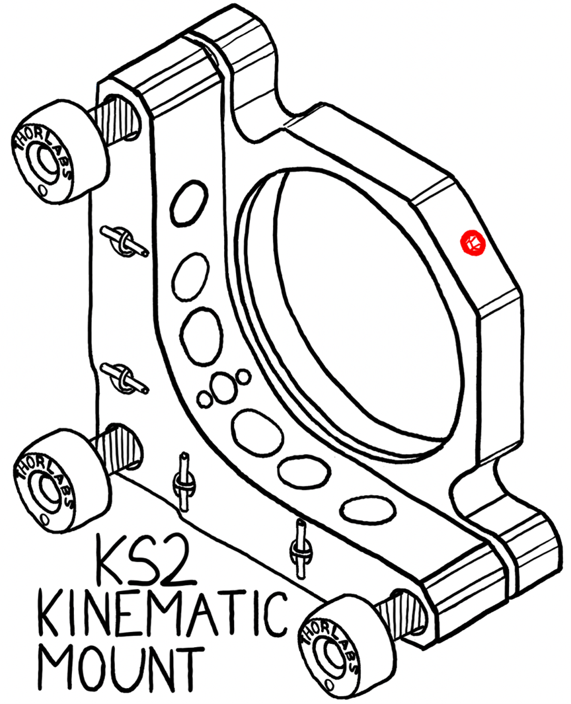
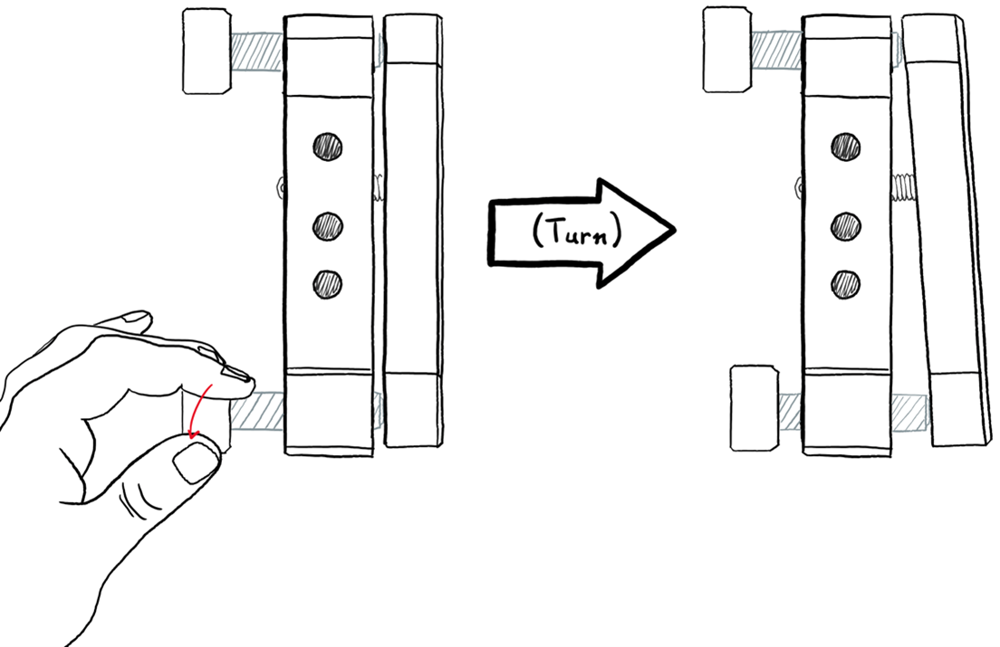
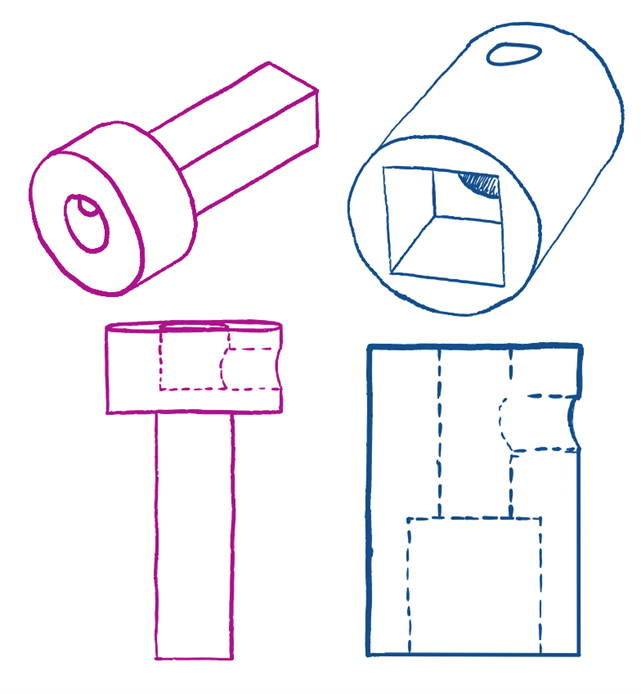
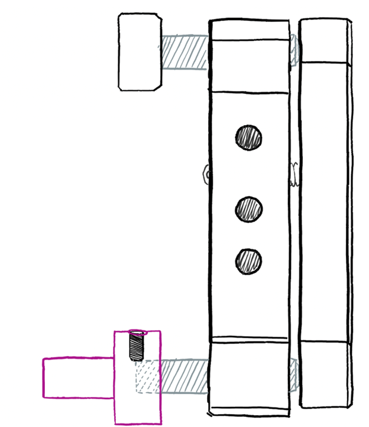
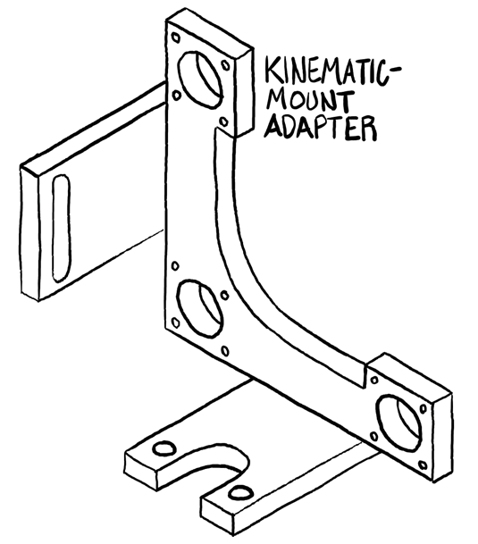
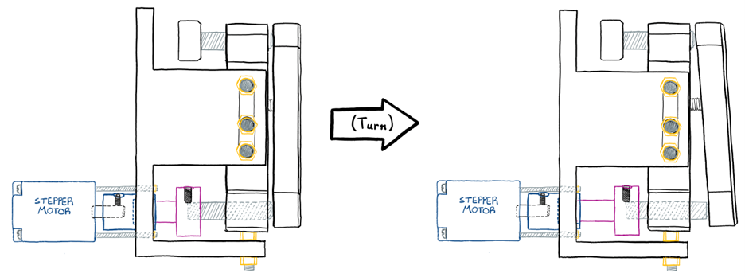
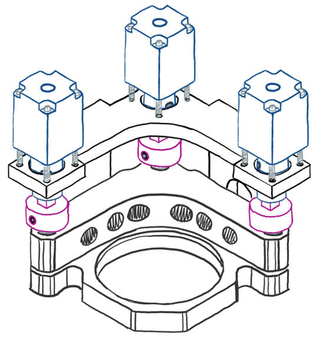

Teleoperated High-precision Optics Repositioner (THOR)
Project Overview: Development of a motorized control system for precise adjustment of optical components in kinematic mounts, replacing manual knob adjustments with computer-controlled stepper motors.
Background
Kinematic mounts are used in optical setups to hold and precisely adjust mirrors, lenses, and other optical components. The KS2 kinematic mount provides stable and precise adjustment of optical components through three manual adjustment knobs.

The KS2 kinematic mount with manual adjustment knobs and a central aperture for optical components.

Manual adjustment of a kinematic mount knob, showing the turning motion required for alignment.
Design Challenge
The primary objectives for this project were:
- Replace manual adjustment with motorized control while acheiving greater precision
- Preserve the mount's original stability and adjustment range
- Create a modular design that could be easily implemented on preexisting kinematic mounts
Technical Solution
1. Component Design

Two crucial 3D printed components: Part A (Blue, coupling to stepper motor) and Part B (Pink, replacement for manual knob)
The solution involves two key custom-designed components:
- Part A: Interfaces with the stepper motor driveshaft, allowing for precise rotational control
- Part B: Replaces the original manual adjustment knob, maintaining the original adjustment mechanism
2. Mechanical Integration

Integration of Part B with the adjustment screw, secured by a set screw
The mechanical integration involves several critical features:
- Set screws secure both components to their respective shafts
- A unique coupling mechanism allows rotational motion transfer while permitting necessary translational movement
3. Motor Mount Design

Custom-designed Kinematic Mount Adapter for secure stepper motor positioning
A specialized adapter was designed to:
- Securely position the stepper motors
- Maintain precise alignment with the adjustment mechanism

Motorized adjustment of a kinematic knob
Final Implementation

Complete assembly showing three stepper motors integrated with the kinematic mount
Key Features:
- Three independent stepper motors for control of mirror's angle
- Maintained original precision of the kinematic mount
- Computer-controlled adjustment capability
- Modular design allowing for easy maintenance
Control System Specifications
Current Stage: This is an ongoing project. As of December 2024, I've been able to almost completely assemble a test-adapter and attached it to a KS2 kinematic mount. I've recently experimentally verified that the stepper motors have adequate torque to adjust the kinmatic mount screws when controlled via Tinkerboard.
Applications
This motorized system enables:
- Remote adjustment of optical components in sensitive environments
- Automated alignment procedures
- Precise, repeatable adjustments for experimental setups
Future Developments
Potential improvements and extensions include:
- Integration of THOR in measurement of optical derivative
- Development of automated alignment algorithms
- Design and Implementation of web-based control interface